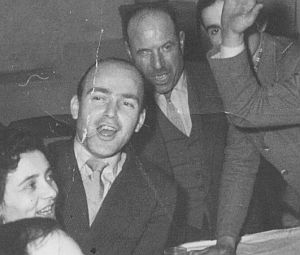
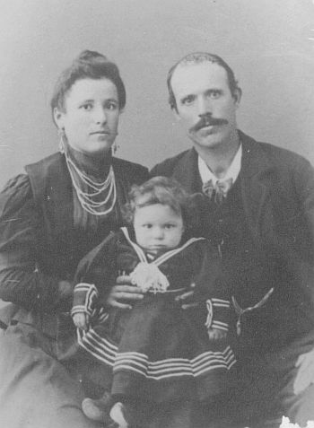
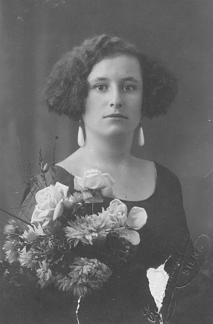
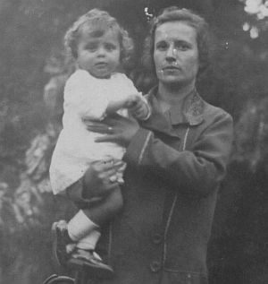
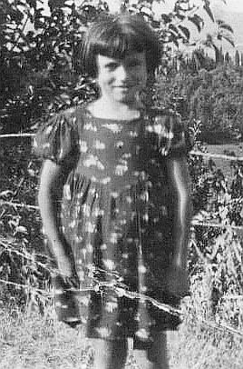
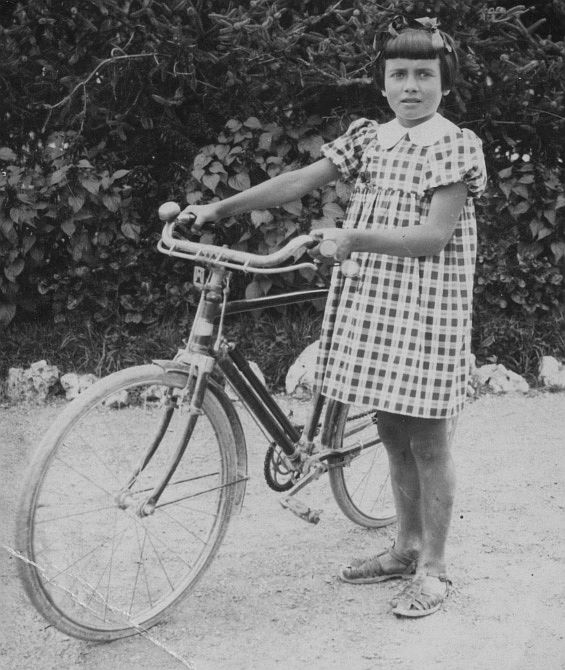
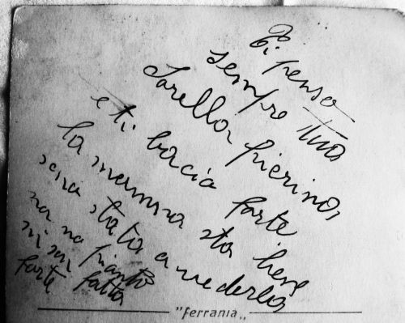

Quercegrossa (Ricordi e memorie)
CAPITOLO XI - COSE D'ALTRI TEMPI
Torna all'Indice Cose d'altri tempi
Vai all'Indice dei Capitoli
(Personaggi 1) Beppe e Alduina/Scoiolo/Il Pallassini/Il Moro/Vico e Ottorina/Cisbone e il gioco
(Personaggi 2) Il Mosca/Il Coccheri/Feo/Il Tanzini/Osvaldo/Emilia la bottegaia/Mondo zucchino
(Personaggi 3) Il mi' nonno Egisto/ La mi' nonna Ersilia/Il buon fattore
(Personaggi 4) Gina:operaio o contadino?/Picciola/Pino/Pierina la peste
Gina: operaio o contadino?
“La mi' mamma non voleva che sposassi un contadino. “Sei sacrificata; fai la disgraziata" mi diceva, ma io mi fidanzavo soltanto con i contadini: Guido di Riccucci, ballerino eccezionale, Piombo del Testi e infine Egisto Francioni. "Ero fidanzata con Piombo che da militare si era fatto mandare a Napoli per me, e venne a trovarmi quando io ero a servizio presso una famiglia, ma la mia mamma non volle che continuassi perché non dovevo sposare un contadino. Mi volevano dare il Fusi Gino di Basciano, un artigiano falegname, ma io non lo volevo e poi non sapeva ballare. Ero sui ventitre anni, s'era nel 1939, mi veniva dietro anche nella sala di Fonterutoli”. Il Fusi era un benestante, possedeva una nuovissima e bella motocicletta Bianchi 500 e tutte le sere d'estate e le domeniche veniva a Quercia. Posteggiava davanti alla bottega del barbiere dove vi lavorava il Taddei. Faceva un po' il borioso e metteva in moto sgassando ripetutamente facendo un rombo terribile, da esibizionista. Le ragazze erano tutte intorno ammirate, ma il Taddei dal di dentro borbottava e magari gli mandava qualche accidente per il fumo e il chiasso.
Portava le altre ragazze in moto, le quali ben volentieri accettavano l'invito a fare le protagoniste, ma non Gina. Poi si metteva alle panchine del Mori e aspettava che lei arrivasse, ma non fu mai ricambiato. “Un giorno ammalai e il Fusi, che in quei giorni lavorava a Passeggeri con Mario, il mi' fratello, gli chiese se poteva venire a trovarmi. La mia mamma fu tanto contenta e Mario mi disse: "Con lui ci stai bene, vedrai". Per loro era quasi fatta, ma non per Gina. Aveva altri pretendenti che la volevano in moglie. La vedevano leggiadra ballerina in sala, ma anche donna seria e casalinga responsabile e si infatuavano come Otello Mencherini, Gino Cellesi e altri, ma era tutta gente che non sapeva ballare e non gli garbava.
Il su' babbo si chiamava Egisto e questo nome proprio non gli piaceva. Tante volte aveva detto: "Se trovo un uomo che si chiama Egisto non lo prendo".
Dopo la guerra anche Gina si sposò e prese un contadino del Poggio al Sale che si chiamava Egisto e constatò che la su' mamma aveva ragione: era dura lavorare la terra. Essa non si adattò per niente al nuovo lavoro. Una donna, come usava tra i contadini, doveva rimanere sempre a casa, ma lei voleva andare nei campi per dimostrare buona volontà e poi c'era da governare i maiali e lei aveva paura; c'era da dar mangiare ai coniglioli e lei aveva paura, e allora preferiva andare nei campi. Ma andava a zappare e lei rimaneva indietro e così a segare; Egisto non l'aiutava mai, solo il suocero l'aiutava. Anche i genitori di Egisto non volevano che la sposasse, preferivano una contadina di stozzo come loro, sulla quale contare. “Se non moriva presto la mi' mamma non me l'avrebbe fatto sposare un contadino”. Poco prima delle nozze la chiamò Egisto e ridacchiando le disse: "Gina, ti ho portato la camera fatta dal tuo fidanzato". Era proprio lui, Gino Fusi, il suo vecchio spasimante ormai datosi per vinto, il falegname che gli aveva fatto la camera da sposa.

Picciola
Silvio, capoccio dei Landi di Basciano, comprò nel 1951 la bottega del Brogi a Quercegrossa e col fratello Bruno e la sorella Vittorina iniziò la nuova attività commerciale. Era già conosciuto a Quercia con il soprannome di Picciola e la bottega divenne “la bottega di Picciola”. Fu noto come spietato affarista e persona di un’avidità fuori dal comune, qualità che traspirava in ogni sua azione tesa ad accumulare o risparmiare soldi. Di lui si rammentano tanti aneddoti curiosi e interessanti. Capoccio assoluto, alla vecchia maniera, teneva i soldi e i conti in modo esclusivo.
Aveva una grossa cassa di robusto legno dove depositava gli incassi e i risparmi e portava la chiave di questa cassaforte attaccata al collo con una funicella.
Picciola tra Renato Stracciati e Vittorio Castagnini nell’ultimo dell’anno del 1956.
Nemmeno sul tavolo operatorio, quando si ruppe la gamba, la volle consegnare. Aspettarono che l’anestesia facesse effetto per levargliela.
Un carattere insomma “poco malleabile” e un atteggiamento scontroso in un uomo dedito soltanto al guadagno e al risparmio, e di conseguenza un uomo trascurato nella persona, proprio come un vecchio contadino qual era. Non voleva nemmeno che la cognata Elsa gli lavasse i panni, ossia vestiti, lenzuola ecc. perchè glieli consumava. “Tanto si rinsudiciano”, gli spiegava. Si ammalò di ulcera e non sentiva ragioni quando lo consigliavano di operarsi, perchè lui ci aveva da fare e non aveva tempo per l’ospedale. Ma questa trascuratezza gli costò cara perchè il male si trasformò nel tumore che lo portò alla tomba. Il giorno prima di morire andò a Siena in Sita, con l’intenzione di raggiungere l’ufficio del suo notaio alla Costarella. Arrivò soltanto in Piazza Indipendenza esausto e tormentato dal dolore. Poi, mancandogli la forza di proseguire, ritornò indietro e non modificò il testamento come avrebbe voluto fare.

Ai tempi che gestivano la bottega a Quercia lui e il fratello Bruno, ogni tanto litigavano. Allora Picciola maturava la decisione di dividere tutto quello che aveva in comune con i parenti, come i beni del Bozzone, compresi i vitelli. Chiamava il parente di Arezzo, Giovanni, il marito di Matelda la figliola di Margherita, altra sorella di Silvio, si sedevano a un tavolo e lì Picciola dimostrava sfacciatamente tutto il suo attaccamento alla roba: “I vitelli l’ho rallevati io e so’ mia ... questo e mio, quest’altro è mio”. A quel punto Giovanni si ribellava e Picciola con padronanza: “Vedi Giovanni, te non ci hai capito niente”. “No, io ho capito benissimo; non mi dovevi chiamare”, rispondeva, e se ne andava. Così trattava i suoi affari Picciola al quale piacevano i soldi.
Era nota a tutta Quercia la simpatia che aveva per il suo giovane nipote Franco ed è anche ricordata quella famosa frase che spesso ripeteva quando ci giocava: “Che billone il mi’ Franchino”. In ogni circostanza non perdeva l’occasione per lodarlo come quando il piccolo Franco prese incautamente in mano il rovente manico usato per razzolare il focone e Picciola ne approfittò per dire: “Furbo il mi’ cittino. Ha preso il ferro che bruciava in mano e l’ha lasciato subito”.
Il piccolo Silvio tra il babbo Francesco e la mamma Maria nel 1901. E’ ancora “Picciolino”.
Naturalmente un uomo come Picciola non prese mai moglie e forse anche perchè aveva una vistosa menomazione ad un occhio che appariva chiuso ed esteticamente sgradevole. Se l’era procurata da ragazzo con una frustina di salcio guardando i maiali. Quel giorno l’aveva impugnata con entrambe le mani; una sulla parte grossa della frusta e l’altra che afferrava la flessibile punta. Fu questa la mano che perse la presa e la punta del salcio guizzò come una frustata che lo colpì in pieno occhio, rendendolo cieco. Altri aneddoti si ricordano di Picciola come quando confidò all’amico fraterno Reino la sua intenzione ad acquistare certi locali di Quercegrossa. Ma Reino parlando con altri li mise a conoscenza del fatto ed essi, ugualmente interessati allo stabile, si precipitarono il giorno dopo a fare il compromesso. Reino, che quella volta non volendo lo tradì, era un suo vecchio amico di avventure col quale innumerevoli volte aveva bazzicato il casino di Siena, ed entrambi rimasero scapoli. Silvio, prima di partire per la sua avventura amorosa passava dal pollaio e fregava una gallina alla su’ mamma. La vendeva e così si procurava i soldi per il casino, mentre la povera donna non si raccapezzava su questi continui furti di galline. Silvio, che per la ricordata invalidità aveva ottenuto l’esonero dal servizio militare, in tempo di guerra per evitare incontri pericolosi, era solito recarsi a Siena passando dalla ferrovia dove trovava tutta gente conosciuta, come il casellante o gli operai, anche se una volta rischiò grosso a causa di un bombardamento. Durante la guerra non si fece sfuggire l’opportunità del guadagno: “fu il più grande contrabbandiere della zona”. Trafficava in cuoio con Santa Croce sull’Arno e in benzina, realizzando notevoli guadagni “...senno come avrebbe fatto a comprare la bottega di Quercegrossa?”.

Silvia Landi, sorella di Picciola.
Dimorando ancora a Basciano intorno al 1950, Picciola possedeva una Vespa che, come sappiamo, era un mezzo particolarmente impegnativo da guidare, soprattutto con la strada sterrata e il breccino alto. Picciola montò Elsa nel sedile di dietro per portarla all’ospedale, forse per delle analisi, e si avviarono nella discesa di Basciano. Arrivarono sì all’ospedale, ma il viaggio venne interrotto sette volte per altrettante cadute dovute certamente all’imperizia del guidatore, ed Elsa si ritrovò spesso a sedere per terra. Alcuni anni dopo, Picciola in bicicletta porta Franchino in canna e questo bambino involontariamente gli mette il tacco della scarpa nella ruota anteriore che si blocca facendoli capitombolare. Poco dopo passò la Sita per Quercegrossa e Picciola ci montò Franchino e raccomandò di scenderlo a Quercegrossa; a casa si videro arrivare questo cittino da solo. Ormai vecchio, vivendo a Monaciano, Picciola si volle rifare la bicicletta, ma non era più il baldo giovane di una volta. Prima di tutto fece togliere il cambio perchè secondo lui era un’inutile marchingegno moderno, poi nelle salite scendeva e pintava la bici perchè non ce la faceva; le discese le faceva a piedi perchè aveva paura che i freni non funzionassero, di conseguenza erano pochi i tratti utili che percorreva in pianura e tutto sommato avrebbe fatto meglio ad andare a piedi.
Viveva solo a Monaciano quando ebbe un brutto incidente casalingo: per scendere del canto del fuoco cadde pesantemente sul pavimento e si fratturò una gamba. Senza nessun aiuto si trascino penando fino al letto, vi entrò e vi rimase per un giorno e mezzo nel più completo abbandono. Fu il panaio che gli portava il pane a sentire le sue grida di aiuto e passare da una finestra del piano terra per prestargli soccorso.
Picciola non era mai uscito dal suo mondo, ma da vecchio volle tentare l’avventura di una gita all’estero e andò in Russia con una comitiva organizzata. Si trovava sul treno diretto a Mosca, in piedi in uno scompartimento pieno all’inverosimile. Ad una fermata, poco distante dalla capitale, molta gente scese e, come capita, la folla si precipitò urtandosi e spingendosi agli sportelli, e anche Picciola si ritrovò sul marciapiede, mentre doveva rimanere sul treno. Era stato letteralmente sollevato da terra e portato di peso fuori senza poter opporre resistenza. Lui non si impressionò, ma attese pazientemente lì, in quella stazioncina, fino a quando vennero a riprenderlo. Apprezzò molto quella gita e la successiva in Egitto, dove ebbe modo di fare interessanti conoscenze tanto da fargli dire: “Se l’avessi saputo prima...”.
La sorella di Silvio, Silvia, che ogni tanto veniva a Quercia dai parenti, trovò occupazione in una pizzeria di Siena in Camollia dentro la Porta, e un giorno fece confusione: “Ma, mi ha ordinato un pantalone...”. Voleva dire un “calzone”, ma non ricordava bene.
Erroneamente riporto nel primo volume alla famiglia Landi Bruno che Vittoria emigrò ad Arezzo e Margherita a Roma. E’ esattamente il contrario, ma se Vittoria si portò a Roma a servizio, Margherita giunse ad Arezzo per uno strano destino. Successe che...

Margherita Landi e la piccola Matelda Mansueti.
Margherita Landi, la sorella di Picciola, prese per marito un Brogi. Era questi, negli anni 1920/21, un giovane operaio da poco assunto dalle Ferrovie dello Stato. Si vivevano anni di agitazioni e disordini e quando venne proclamato uno sciopero a Siena i vecchi operai socialisti convinsero anche i giovani a scioperare perchè “se succedeva qualcosa ci avrebbero pensato loro”. E invece non ci pensarono affatto e Livio venne licenziato. Livio Brogi di Emilio era stato battezzato a Vagliagli nel 1900 e Margherita di Francesco Landi a Siena nel 1904. Si sposarono nel maggio del 1924 e tornarono a Castellina Scalo, con Livio operaio dal Puccioni. Qui, col fratello Orlando (Pampocchio) si costruiscono una villetta a sinistra della Chiesa. Una notte, sulla Cassia, vicino alla loro abitazione, avvenne l'incidente al direttore dell'INPS di Siena, il dr. Mansueti: un incidente che avrebbe cambiato la loro storia. Il Direttore aveva a bordo la moglie, che riportò una commozione celebrale, le tre figlie, tra le quali la piccolissima Matelda, e il suocero che perì nell'incidente. I Brogi si precipitano a soccorrerli, e Margherita, la quale aveva perso un figlio pochi giorni prima, allattò la piccola Matelda e finì che la tenne a balia per due anni. Dopodichè il Mansueti, riconoscente, chiese a Livio se gli interessava entrare all'INPS e trasferirsi nella sede di Arezzo. Non gli parve il vero a Livio e accettò quello che a quei tempi era un agognato e sicuro posto statale. Prese la necessaria licenza elementare con don Luigi Profeti e si trasferì in quella città dove assunse l’incarico di usciere, mentre Margherita entrò come portiera. Margherita chiamerà Matelda la figlia avuta nel 1927, come la piccina che aveva allattata.
Pino
Ricordo un pomeriggio del 1958/59, nel salottino d’ingresso della casa parrocchiale, mentre ero alle prese con don Ottorino per una ripetizione, quando bussò chiedendo permesso un signore sui quarant’anni vestito con una divisa da ufficiale. Era lui, il famoso Pino, conosciuto da tutta Quercia, ma non da noi più giovani. Un personaggio noto, vissuto per alcuni anni nel nostro paese in modo esuberante, volitivo e festoso con tutti, il quale si era cimentato in tante imprese diventando così parte di un mito, sopravvissuto fino ad oggi in chi lo conobbe: “Un personaggio strano sfollato a Quercegrossa”. La sua vicenda a Quercegrossa inizia negli anni della guerra quando “Una signora di Siena lo portò a Quercia e s'accasò al Mulino, e il mio suocero brontolava”. Così raccontava Duilia, la moglie di Lando Bonelli, ed il suo suocero Vittorio sopportava appena questo invadente ospite che tra le tante si prese anche la sua figliola Rita sposata a Quercegrossa l’8 novembre 1943. Al Mulino “Pino prese il motore a vapore dei Mori e lo collegò con cignone alle macine e macinò. Nella gora fece una barchetta e ci navigava”. Pino ossia Giuseppe Nicolich era nato il 31 dicembre 1921 a Esogrande nell’isola di Eso di fronte a Zara, allora italiana dove “aveva una casa di 35 stanze”. Di famiglia benestante, col padre Fausto medico, ma orfano della mamma Linba Odzic morta a 36 anni, era giunto a Siena “sottotenente nell'esercito e frequentava la facoltà di medicina all'università e aveva due anni a terminare”. Con la guerra sospese definitivamente gli studi e, con la sua città in mano jugoslava, perse ogni bene ritrovandosi povero in canna. Appena sposato si trasferì con la moglie Rita nel palazzo presso i Mori, dove abitò all’ultimo piano. Gli piacevano i motori e s’ingegnava: fece da autista col camioncino, seguiva lo zio Sandro nella tribbiatura e da lui apprese a suonare la fisarmonica conducendo in quegli anni una vita spensierata, mangiando e bevendo in casa Mori, mentre Rita dava una mano alle donne. Dopo guerra tornò a Siena impiegato alla Sita per un paio d’anni, poi entrò nella Polizia stradale come sottotenente, e venne trasferito a Carrara dove non gli mancò il sostegno della famiglia Bonelli avendo avuto due bambine, Paola e Franca. Questa è la storia di Pino, una delle tante avventure di quegli anni di guerra.
Del periodo senese si ricordano le sue partecipazioni a diverse gare automobilistiche col Bassi della Lancia, fra cui una Mille Miglia.

Pierina la peste (Arruffapopoli)
Piera Rossi, detta Pierina, è la mi’ zia. Lasciò Quercegrossa nel 1957, moglie di Renato Stracciati, e tornò a Siena. Per 27 anni aveva fatto parte di quello scanzonato e numeroso gruppo di bambine e poi ragazze che rappresentarono la parte vivace di Quercegrossa. Se c’è una cartolina, o una foto quasi sempre ci troverete Pierina in piazza e sempre curiosa, ma lei in particolare era stata certamente la più dispettosa.
Pierina Rossi nel 1937/38.
La zia Ilda, dopo aver fatto le faccende di casa Rossi in quei pomeriggi calmi dove si sentivano volare le mosche, sia per il tepore della stufa o del sole che batteva dalla finestra di cucina, si appisolava appoggiata alla stufa accesa o sul canto del fuoco. Era il momento dello scherzo ed entrava in azione Pierina, la quale usava diversi accorgimenti per annoiare la cognata. Erano scherzi anche pesanti. Prendeva un ferro, lo faceva arrovire alla stufa accesa e bucava il braccio di Ilda "e come saltava". “Gli facevo anche delle pappine col mio sputo e altre cose che poi gli mettevo in bocca e lei cominciava a biasciare fino a svegliarsi”. Bella idea era anche quella della "zolfata" con il fiammifero di legno. Quei fiammiferi con una bella capocchia di zolfo che accesi ti soffocavano dal puzzo di zolfo.
Tutti erano nelle mire di Pierina che si divertiva con una certa incoscienza: "Una volta montai Bianca del Mori quando aveva otto anni, in uno di quei carretti a due ruote e la spinsi giù per la strada del doccio. Un provvidenziale ulivo fermò la corsa”.
Alcune giovani avevano comprato la calze di nylon, quelle con la costura e la giarrettiera, alle quali tenevano come alla pelle e si pavoneggiavano con queste calze ben in vista. Erano a merenda nel bosco e Pierina dispettosa com'era, a forza di pizzicotti le smagliò a tutte. Pierina Rossi una “scugnizza alla Toscana”. Da bambina passava le giornate in piazza a giocare e inventava sempre qualcosa. Con la bicicletta di un fratello cadde malamente al Leccino, si sbucciò tutta sul breccino e perse anche conoscenza per alcuni minuti creando allarme e paura. Il dottor Provvedi non faceva pari a medicarla e quando in una delle serate al boschetto dove si cimentavano i ragazzi con i carretti Pierina volle provare anche lei ribaltandosi e ferendosi a una gamba, il dottore, di fronte alle resistenze della giovane a non farsi una puntura strillando come un’ossessa e divincolandosi sferrando calci come un mulo, e ci vollero degli uomini per tenerla, non seppe resistere e spontaneamente gli usci di bocca: “Ma sei proprio un’ Arruffapopoli”.


Pierina Rossi con la bicicletta dei fratelli ripresa alla Lizza nel 1940 in occasione della visita alla mamma ricoverata in ospedale.
A sinistra, sul retro della foto, Pierina Rossi invia un saluto al fratello Gino che combatte in Africa e gli dà notizie della mamma. Questa vivace ragazzina di Quercegrossa in età di 10 anni perse la mamma e a 17 anni anche il babbo.
Ma non sempre agiva da sola, anzi spesso era il gruppo ad agire in sintonia come quella sera quando non li vollero far entrare nella sala da ballo. Il gruppetto di ragazzi, più numeroso e chiassoso del solito quella sera del 1940/41, non era riuscito ad entrare in sala ed erano stati scacciati in malo modo dai grandi. C’erano la zia Piera, Albertina Travagli, Alba Losi, Sergio Losi, Ardizio Forni e altri che vollero vendicarsi prendendo di mira quelli che andavano al ballo. Idearono un piccola trappola per le signorine in abito lungo e piazzarono del filo spinato mezzo arrotolato all’altezza del cancello d’ingresso legandolo al medesimo. Passarono tutte eleganti Anna Rossi poi Lidia di Forni con Albana Salnitri e a tutte il filo di ferro, a loro invisibile per la poca luce, si “aggangiava” all’abito e nel movimento del passo lo strappava in più punti, mentre i ragazzi a prudente distanza facevano finta di niente. E così rovinarono diversi vestiti fra la disperazione delle signorine. Non contenti di ciò, presi dalla smania ruzzaiola, continuarono a dar noia ai ballerini e colsero numerosi fichi d’india che crescevano sulle tante piante sopra il muro della strada del Castello e le gettavano dalla finestrina del gabinetto del Dopolavoro ogni qualvolta vi entrava qualcuno suscitando grida di protesta e di minacce. Era, insomma, un gruppetto vivace e molesto che non risparmiò nemmeno i carrozzoni dei giocolanti, rimasti incustoditi per il ballo. Loro, protetti dal buio, vi entrarono e buttarono all’aria tutto: vestirono con gli abiti dello spettacolo e usarono i loro trucchi.
Il bacio
La zia Piera va a lavoro a Siena in bicicletta. Ma una sera piove e, come abitudine con quel tempo, va a S. Domenico a prendere la Sita delle 17: "Ero con Albertina e si perse. Ci si avvia a piedi sperando in qualche conoscente di passaggio. Verso Fontebecci si ferma una macchina e si chiede un passaggio per Quercia, ma andava a Poggibonsi. Fatti qualche centinaio di metri l’auto si riferma, fa manovra e torna indietro. "Mi fate pena" ci disse, e ci portò a casa. Al momento di scendere a Quercia, ci sorprese con una frase inaspettata: "Ora un bacio me lo darete". A quelle parole Albertina schizzò lesta fuori dalla macchina e quest'uomo chiappò me per la giacca. Mi divincolai, mi si strappò, ma scappai".
Bugia
Ancora Piera Rossi: "Tornando da lavoro in bicicletta insieme agli altri di Quercegrossa si formava un bel gruppo e ci si schierava in linea occupando tutta la strada. Una sera si trovano i carabinieri passato Fontebecci che ci fermano. Io ero dietro a tutti, ma si rivolsero proprio a me: "Sei in contravvenzione" mi dissero. L'appuntato prese il blocchetto delle multe in mano e mi si rivolse: "Come ti chiami?" Io, senza pensarci due volte, in modo spontaneo risposi: "Testi Angiolina", ricordandomi di una donna che abitava a Castellina. E così scrisse. Come finì la storia non lo so, ma la multa la fecero soltanto a me. Mah, chissà perché, e questo non l'ho mai capito".
Inizio pagina
Ultimo capitolo Personaggi
Indice Cose d'altri tempi
Vai all'Indice dei Capitoli
|